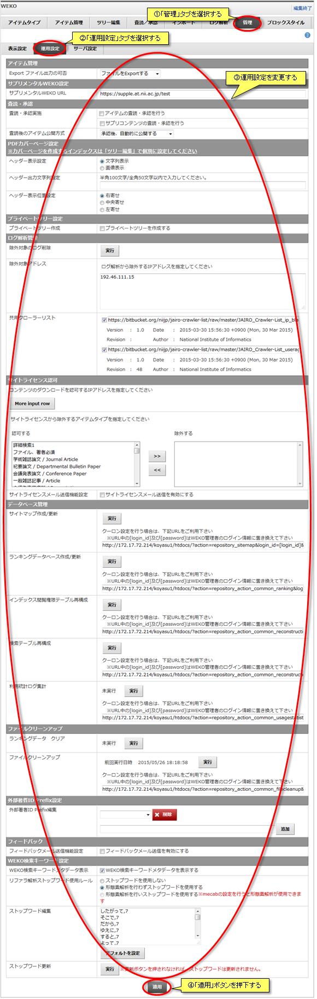
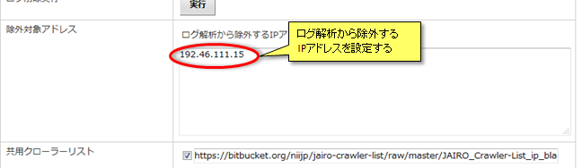
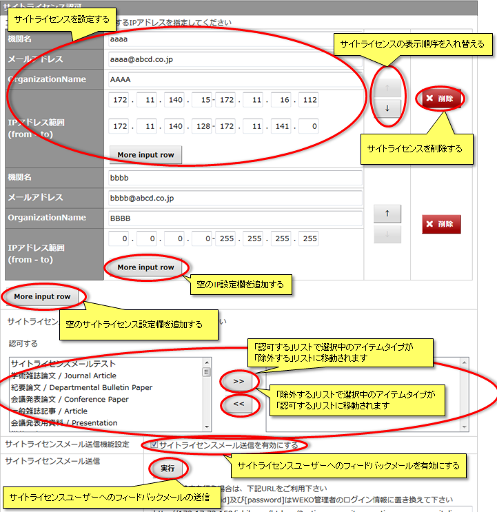
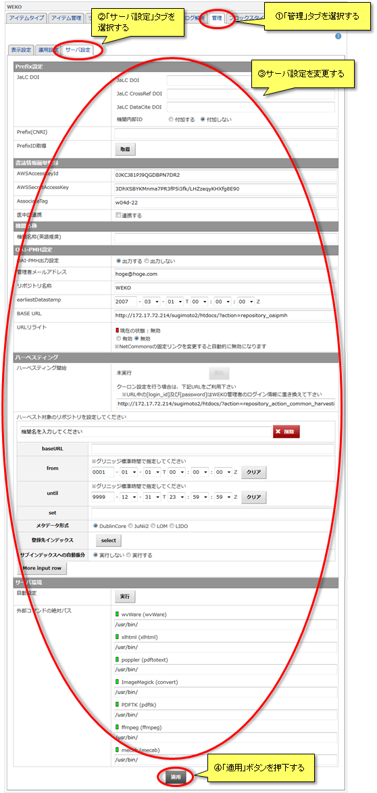
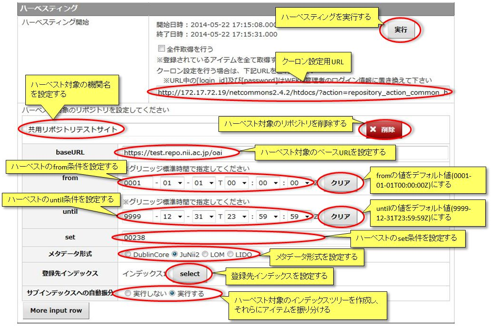
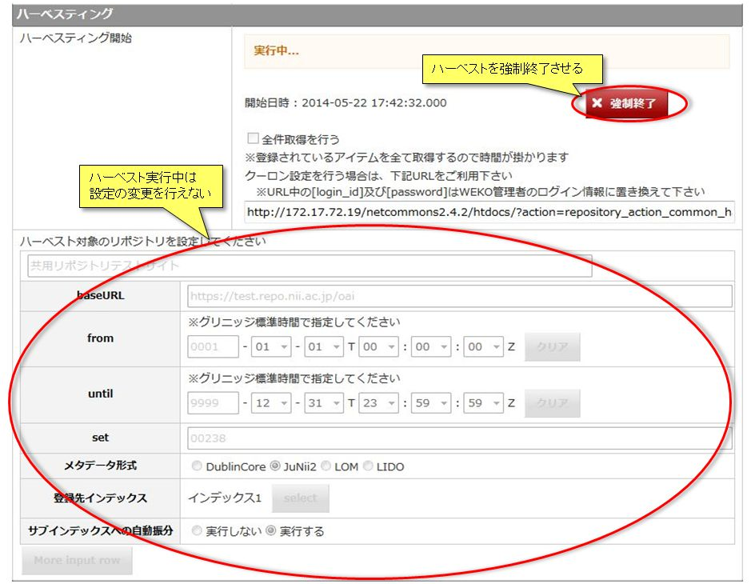

WEKO管理
WEKOモジュールの表示、運用、サーバー設定を行うことができます。
表示設定
「表示設定」では下記10項目を設定することができます。
「管理」タブを選択し、「表示設定」タブを選択すると表示設定画面が表示されます。
設定変更後は「適用」ボタンを押下し、変更を反映してください。

「管理」タブを選択し、「表示設定」タブを選択すると表示設定画面が表示されます。
設定変更後は「適用」ボタンを押下し、変更を反映してください。
初期表示設定
トップページの初期表示を設定することができます。
設定する初期表示画面はトップページの右側となります。
初期表示画面設定
設定する初期表示画面はトップページの右側となります。
初期表示画面設定
セレクトボックスから「ランキングを表示する」を選択するとトップページの初期表示がランキングとなります。
セレクトボックスから「インデックス検索結果を表示する」を選択するとトップページの初期表示がインデックス検索結果となります。
初期表示画面設定セレクトボックスから「インデックス検索結果を表示する」を選択するとトップページの初期表示がインデックス検索結果となります。
初期表示画面設定で「インデックス検索結果を表示する」が選択されている場合、インデックスの検索条件を設定することができます。
セレクトボックスから「最も新しい公開アイテムの属するインデックス」を選択すると最も新しいアイテムが登録されたインデックスの検索結果が表示されます。
セレクトボックスから「インデックス指定」を選択すると検索インデックス指定欄が表示され、指定されたインデックスの検索結果が表示されます。
検索インデックスを複数指定することはできません。
セレクトボックスから「最も新しい公開アイテムの属するインデックス」を選択すると最も新しいアイテムが登録されたインデックスの検索結果が表示されます。
セレクトボックスから「インデックス指定」を選択すると検索インデックス指定欄が表示され、指定されたインデックスの検索結果が表示されます。
検索インデックスを複数指定することはできません。
言語表示設定
言語選択表示設定
言語選択欄の表示/非表示を設定することができます。
セレクトボックスから「表示する」を選択すると、トップページに言語選択欄が表示されます。
セレクトボックスから「表示しない」を選択すると、トップページの言語選択欄が非表示となります。
他言語表示設定セレクトボックスから「表示する」を選択すると、トップページに言語選択欄が表示されます。
セレクトボックスから「表示しない」を選択すると、トップページの言語選択欄が非表示となります。
サイトの表示言語およびメタデータ属性の言語設定に応じてメタデータの表示/非表示を設定することができます。
下記は表示言語とメタデータ属性の言語設定によるメタデータの表示対応表です。
下記は表示言語とメタデータ属性の言語設定によるメタデータの表示対応表です。
| チェック状態 | サイト表示言語 | メタデータ属性の言語設定 | |||
|---|---|---|---|---|---|
| 日本語 | 英語 | 指定なし | 日本語 | 英語 | |
| チェックなし | チェックなし | 日本語 | 表示 | 表示 | 非表示 |
| 英語 | 表示 | 非表示 | 表示 | ||
| チェックなし | チェックあり | 日本語 | 表示 | 表示 | 非表示 |
| 英語 | 表示 | 表示 | 表示 | ||
| チェックあり | チェックなし | 日本語 | 表示 | 表示 | 表示 |
| 英語 | 表示 | 非表示 | 表示 | ||
| チェックあり | チェックあり | 日本語 | 表示 | 表示 | 表示 |
| 英語 | 表示 | 表示 | 表示 | ||
通貨単位設定
課金ファイルの価格表示に利用する通貨単位を設定することができます。
セレクトボックスから選択した通貨単位が課金表示に使用されます。
セレクトボックスから選択した通貨単位が課金表示に使用されます。
インデックスリンク表示
トップページのインデックス簡易アクセスUI表示を設定することができます。
設定するインデックス簡易アクセスUIはトップページの左側となります。
【注意事項】
設定するインデックス簡易アクセスUIはトップページの左側となります。
【注意事項】
- インデックス簡易アクセスUIに含めるインデックスは、ツリー編集から個別に設定する必要があります。
ランキング管理
ランキングの集計方法、集計期間について設定することができます。
各項目の概要は下記のとおりです。
【注意事項】
各項目の概要は下記のとおりです。
| 項目名 | 概要 |
|---|---|
| 表示設定 |
ランキングをリアルタイム集計するかDB情報を利用するか設定する セレクトボックスから「リアルタイムに更新する」を選択すると、リアルタイムで集計したランキングが表示される セレクトボックスから「DB保存情報を表示する」を選択すると、DBに登録されているランキング情報を利用したランキングが表示される |
| ランキング表示設定 |
登録アイテムを新着アイテムとして扱う期間を設定する |
| 新規登録期間 |
ランキングタブの表示／非表示を設定する 「表示する」を選択するとWEKOのトップページにランキングタブが表示される |
| 統計期間 |
ランキングに集計するログの期間を設定する |
| 表示順位 | ランキングに表示する順位を設定する |
| 表示項目 |
表示するランキングを設定する チェックされているランキングが表示される |
【注意事項】
- DBに登録されているランキング情報を利用する場合、あらかじめランキングデータベースに情報が登録されている必要があります。
- http://[サイトURL]/?action=repository_action_common_ranking?login_id=[管理者のログインID]&password=[管理者のログインパスワード]へアクセスするとランキングデータベースが作成されます。
- 新規登録期間に設定できる日数は「1日」からとなります。
検索設定
WEKOの簡易検索および詳細検索のデフォルトの検索タイプを「全文検索」または「キーワード検索」のどちらかに設定することができます。
下記のように設定した値がトップページの検索画面に反映されます。
下記のように設定した値がトップページの検索画面に反映されます。
詳細検索条件設定
使用可能な詳細検索条件およびデフォルトで表示する詳細検索条件について設定することができます。
なお、著者名 OR 著者IDに関しては使用項目から外すことはできません。
なお、著者名 OR 著者IDに関しては使用項目から外すことはできません。
検索結果表示設定
デフォルト検索条件および表示するソート条件について設定することができます。
各項目の概要は下記のとおりです。
各項目の概要は下記のとおりです。
| 項目名 | 概要 |
|---|---|
| デフォルト表示件数 |
セレクトボックスから検索結果のデフォルト表示件数を設定する |
| インデックス検索 デフォルトソート条件 |
セレクトボックスからインデックス検索のデフォルトソート条件を設定する |
| キーワード検索 デフォルトソート条件 |
セレクトボックスからキーワード検索のデフォルトソート条件を設定する |
| 一覧に表示するソート条件 |
一覧に表示するソート条件を設定する セレクトボックスから「表示しない」リストにあるソート条件は、トップページのソート条件選択欄に表示されません。 セレクトボックスから「表示する」リストにあるソート条件は、トップページのソート条件選択欄に表示されます。 |
アイコン表示設定
トップページのヘルプアイコンとOAI-OREアイコンの表示／非表示を設定することができます。
どちらも「表示する」を選択した場合、トップページ画面は以下のようになります。
どちらも「表示する」を選択した場合、トップページ画面は以下のようになります。
利用統計リンク表示設定
アイテム詳細画面に利用統計リンクを表示するかしないかを設定することができます。
「表示する」を選択した場合、アイテム詳細画面は以下のようになります。

「表示する」を選択した場合、アイテム詳細画面は以下のようになります。
運用設定
「運用設定」では下記12項目を設定することが可能です。
設定変更後は「適用」ボタンを押下し、変更を反映してください。

- アイテム管理
- サプリメンタルWEKO設定
- 査読・承認
- プライベートツリー設定
- PDFカバーページ
- ログ解析管理
- サイトライセンス認可
- データベース管理
- ファイルクリーンアップ
- 外部著者ID Prefix設定
- フィードバック
- 検索キーワード表示設定
設定変更後は「適用」ボタンを押下し、変更を反映してください。
アイテム管理
アイテムの一括エクスポートに登録ファイルを含めるかどうかを設定することができます。
セレクトボックスから「ファイルをExportしない」を選択した場合、アイテムのエクスポートから登録ファイルをダウンロードすることができません。
セレクトボックスから「ファイルをExportする」を選択した場合、アイテムのエクスポートから登録ファイルをダウンロードすることができるようになります。
登録されたファイルのダウンロード形式を設定する事ができます。
ダウンロード形式の詳細はアイテムリストの表示をご参照下さい。
セレクトボックスから「ファイルをExportしない」を選択した場合、アイテムのエクスポートから登録ファイルをダウンロードすることができません。
セレクトボックスから「ファイルをExportする」を選択した場合、アイテムのエクスポートから登録ファイルをダウンロードすることができるようになります。
登録されたファイルのダウンロード形式を設定する事ができます。
ダウンロード形式の詳細はアイテムリストの表示をご参照下さい。
サプリメンタルWEKO設定
サプリWEKOとなるサイトURLを設定することができます。
サプリメンタルコンテンツはこのURLのサイトに登録されたアイテムを利用します。
サプリメンタルコンテンツはこのURLのサイトに登録されたアイテムを利用します。
査読・承認
アイテムの査読・承認について設定することができます。
「査読承認実施」にチェックがある場合、登録されたアイテムまたはサプリメンタルコンテンツの査読・承認を実施することができます。
チェックがない場合、登録されたアイテムまたはサプリコンテンツが自動的に承認されます。
「査読通知メールを送信する」にチェックがある場合、査読対象のアイテムまたはサプリメンタルコンテンツが登録された際に査読通知メールが送信されます。
査読通知メールの送信先は査読通知送信先設定欄に設定してください。
「査読後のアイテム公開方式」セレクトボックスから承認されたアイテムを自動公開するか選択します。
「査読承認実施」にチェックがある場合、登録されたアイテムまたはサプリメンタルコンテンツの査読・承認を実施することができます。
チェックがない場合、登録されたアイテムまたはサプリコンテンツが自動的に承認されます。
「査読通知メールを送信する」にチェックがある場合、査読対象のアイテムまたはサプリメンタルコンテンツが登録された際に査読通知メールが送信されます。
査読通知メールの送信先は査読通知送信先設定欄に設定してください。
「査読後のアイテム公開方式」セレクトボックスから承認されたアイテムを自動公開するか選択します。
PDFカバーページ
PDFカバーページについて設定することができます。
登録したPDFにコンテンツデータからカバーページを追加出来るようになります。
ヘッダーに文字列または、画像を表示出来ます。
ヘッダーの表示位置を設定できます。
ヘッダーに文字列を表示する場合
ヘッダーに画像を表示する場合
【注意事項】
登録したPDFにコンテンツデータからカバーページを追加出来るようになります。
ヘッダーに文字列または、画像を表示出来ます。
ヘッダーの表示位置を設定できます。
ヘッダーに文字列を表示する場合
ヘッダーに画像を表示する場合
【注意事項】
- ヘッダーには、文字列または画像のどちらかのみが設定出来ます。
- ヘッダーに表示する画像の拡張子は、「jpg」,「png」,「gif」のみ使用可能です。
- PDFカバーページの設定はサブインデックス以下には適用されません。
- カバーページの作成はツリー編集でPDFカバーページの作成するにチェックを入れなければ作成できません。
プライベートツリー設定
プライベートツリーの作成について設定することができます。
プライベートツリーはユーザーごとに作成されるインデックスで、ユーザー本人と管理者のみアイテムを投稿できます。
プライベートツリー作成にチェックがある場合、プライベートツリーが自動で作成されます。
プライベートツリーデフォルト表示順序でプライベートツリーの表示順序が設定できます。
表示順序にはカスタムソート・インデックス名(昇順)・インデックス名(降順)があり、プライベートツリー以外の通常のインデックスの下に指定した表示順序で表示されるようになります。
登録インデックスでプライベートツリーの作成インデックスが設定できます。
プライベートツリーはユーザーごとに作成されるインデックスで、ユーザー本人と管理者のみアイテムを投稿できます。
プライベートツリー作成にチェックがある場合、プライベートツリーが自動で作成されます。
プライベートツリーデフォルト表示順序でプライベートツリーの表示順序が設定できます。
表示順序にはカスタムソート・インデックス名(昇順)・インデックス名(降順)があり、プライベートツリー以外の通常のインデックスの下に指定した表示順序で表示されるようになります。
登録インデックスでプライベートツリーの作成インデックスが設定できます。
ログ解析管理
■除外対象のログ削除
除外対象アドレスおよび共用クローラーリストから、指定されたIPアドレス、ユーザエージェントを持つアクセスログを削除します。
除外されるアクセスログは画面上で設定したIPアドレスおよび共用クローラーリストに
記載されているIPアドレスを持つアクセスログと、共用クローラーリストに記載されている
文字列に部分一致するユーザエージェントを持つアクセスログです。
【注意事項】
除外対象のログを削除している間はログ集計を実施できません。
除外処理終了後、ログの集計が実施できるようになります。
影響を受ける集計結果を下記に記載いたします。
■除外対象アドレス
ログ解析から除外するIPアドレスを指定することができます。

■共用クローラーリスト
ログ解析から除外するIPアドレス、ユーザエージェントの部分一致キーワードリストを定義し、ネットワークを介して取得、設定することができます。
共用クローラーリストはNIIから提供されます。
表示されるバージョンなどは現在取り込んでいるクローラーリストの情報となります。

【注意事項】
除外対象アドレスおよび共用クローラーリストから、指定されたIPアドレス、ユーザエージェントを持つアクセスログを削除します。
除外されるアクセスログは画面上で設定したIPアドレスおよび共用クローラーリストに
記載されているIPアドレスを持つアクセスログと、共用クローラーリストに記載されている
文字列に部分一致するユーザエージェントを持つアクセスログです。
【注意事項】
- アクセスログは物理削除となります
- 設定後、設定されたIPアドレスおよび共用クローラーリストにて指定されたIPアドレスとユーザエージェントを持つアクセスはアクセスログに保存されなくなります
除外対象のログを削除している間はログ集計を実施できません。
除外処理終了後、ログの集計が実施できるようになります。
影響を受ける集計結果を下記に記載いたします。
- ランキング
- 利用統計
- サイトライセンスフィードバックメール送信
- 利用統計フィードバックメール送信
- 定型レポート
- カスタムレポート
■除外対象アドレス
ログ解析から除外するIPアドレスを指定することができます。
■共用クローラーリスト
ログ解析から除外するIPアドレス、ユーザエージェントの部分一致キーワードリストを定義し、ネットワークを介して取得、設定することができます。
共用クローラーリストはNIIから提供されます。
表示されるバージョンなどは現在取り込んでいるクローラーリストの情報となります。
【注意事項】
- 共用クローラーリストを無効にしても削除されたアクセスログは復活しません
- 有効に変更しログ削除実施後、指定されたIPアドレスおよび共用クローラーリストにて指定されているIPアドレスおよびユーザエージェントと部分一致するアクセスはログに保存されなくなります
サイトライセンス認可
サイトライセンスを認可するIPアドレスを設定することができます。
サイトライセンスを認可されたIPアドレスからのアクセスであれば、課金ファイルが無料でダウンロードできるようになります。
また、サイトライセンスが認可されているIPアドレスからのアクセスであってもアイテムタイプごとに無料ダウンロード対象から除外することが可能です。
サイトライセンスユーザーの利用状況をフィードバックする事が出来ます。

サイトライセンスを認可されたIPアドレスからのアクセスであれば、課金ファイルが無料でダウンロードできるようになります。
また、サイトライセンスが認可されているIPアドレスからのアクセスであってもアイテムタイプごとに無料ダウンロード対象から除外することが可能です。
サイトライセンスユーザーの利用状況をフィードバックする事が出来ます。
データベース管理
サイトマップ、ランキングデータベースの作成および更新、インデックス閲覧権限テーブル再構成、検索テーブル再構成、利用統計ログ集計を行うことができます。
■サイトマップ作成/更新
サイトマップの作成および更新を行うことができます。
クーロン設定用URLは、サイトマップの作成および更新を実行するためのURLです。
■ランキングデータベース作成/更新
ランキングデータベースの作成および更新を行うことができます。
クーロン設定用URLは、ランキングデータベースの作成および更新を実行するためのURLです。
■インデックス閲覧権限テーブル再構成
インデックス閲覧権限テーブル再構成を行うことができます。
クーロン設定用URLは、インデックス閲覧権限テーブル再構成を実行するためのURLです。

■検索テーブル再構成
検索テーブル再構成を行うことができます。
クーロン設定用URLは、検索テーブル再構成を実行するためのURLです。
■利用統計ログ集計
利用統計ログ集計を行うことができます。
クーロン設定用URLは、利用統計ログの集計を実行するためのURLです。
■サイトマップ作成/更新
サイトマップの作成および更新を行うことができます。
クーロン設定用URLは、サイトマップの作成および更新を実行するためのURLです。
- サイトマップの作成および更新には管理者権限が必要です。
■ランキングデータベース作成/更新
ランキングデータベースの作成および更新を行うことができます。
クーロン設定用URLは、ランキングデータベースの作成および更新を実行するためのURLです。
- ランキングデータベースの作成および更新には管理者権限が必要です。
- 作成および更新したランキングデータベースの表示設定は、ランキング管理をご参照ください。
■インデックス閲覧権限テーブル再構成
インデックス閲覧権限テーブル再構成を行うことができます。
クーロン設定用URLは、インデックス閲覧権限テーブル再構成を実行するためのURLです。
- インデックス閲覧権限テーブル再構成には管理者権限が必要です。
■検索テーブル再構成
検索テーブル再構成を行うことができます。
クーロン設定用URLは、検索テーブル再構成を実行するためのURLです。
- 検索テーブル再構成には管理者権限が必要です。
■利用統計ログ集計
利用統計ログ集計を行うことができます。
クーロン設定用URLは、利用統計ログの集計を実行するためのURLです。
- 利用統計ログの集計には管理者権限が必要です。
ファイルクリーンアップ
ランキングデータの削除およびゴミファイルの削除を行うことができます。

■ランキングデータ クリア
ランキングデータの削除を行うことができます。
実行ボタンを押下するとゴミファイルを削除します。
以前に実行した事がある場合、前回実行した日時が表示されます。
■ファイルクリーンアップ
ファイルのクリーンアップをすることができます。
実行ボタンを押下するとゴミファイルを削除します。
以前に実行した事がある場合、前回実行した日時が表示されます。
クーロン設定用URLは、ファイルのクリーンアップを実行するためのURLです。
【注意事項】
■ランキングデータ クリア
ランキングデータの削除を行うことができます。
実行ボタンを押下するとゴミファイルを削除します。
以前に実行した事がある場合、前回実行した日時が表示されます。
■ファイルクリーンアップ
ファイルのクリーンアップをすることができます。
実行ボタンを押下するとゴミファイルを削除します。
以前に実行した事がある場合、前回実行した日時が表示されます。
クーロン設定用URLは、ファイルのクリーンアップを実行するためのURLです。
【注意事項】
- ファイルクリーンアップには管理者権限が必要です。
外部著者ID Prefix設定
外部著者ID Prefixを設定することができます。
■外部著者IDの追加
追加したい著者IDを入力し、「追加」ボタンを押下します。
■外部著者IDの削除
削除したい著者IDを選択し、「削除」ボタンを押下します。
■外部著者IDの追加
追加したい著者IDを入力し、「追加」ボタンを押下します。
■外部著者IDの削除
削除したい著者IDを選択し、「削除」ボタンを押下します。
フィードバック
著者へのフィードバックを設定することができます。
アイテムのContributorに対して月毎の利用統計をメールで送信することができます。
また、メール送信除外対象者を設定することができます。
【フィードバックメールサンプル】
【注意事項】
アイテムのContributorに対して月毎の利用統計をメールで送信することができます。
また、メール送信除外対象者を設定することができます。
【フィードバックメールサンプル】
From：〇〇機関リポジトリ管理者
件名：[〇〇機関リポジトリ]2013-01 利用統計レポート
本文：
件名：[〇〇機関リポジトリ]2013-01 利用統計レポート
本文：
平成 太郎 様
平成 太郎 様が登録したコンテンツの利用統計をお知らせいたします。
このメールが不要な場合は、お手数ですが管理者までご連絡ください。
統計月 : 2013-01
----------------------------------------
[タイトル] : サンプルアイテム１
[URL] : http://id.nii.ac.jp/1000/00000001/
[閲覧回数] : ( 0)
----------------------------------------
[タイトル] : サンプルアイテム２
[URL] : http://id.nii.ac.jp/1000/00000003/
[閲覧回数] : ( 7241)
[ダウンロード回数] :
KJ00002671847.pdf ( 1384)
KJ00002671848.pdf ( 0)
平成 太郎 様が登録したコンテンツの利用統計をお知らせいたします。
このメールが不要な場合は、お手数ですが管理者までご連絡ください。
統計月 : 2013-01
----------------------------------------
[タイトル] : サンプルアイテム１
[URL] : http://id.nii.ac.jp/1000/00000001/
[閲覧回数] : ( 0)
----------------------------------------
[タイトル] : サンプルアイテム２
[URL] : http://id.nii.ac.jp/1000/00000003/
[閲覧回数] : ( 7241)
[ダウンロード回数] :
KJ00002671847.pdf ( 1384)
KJ00002671848.pdf ( 0)
【注意事項】
- 「フィードバックメール送信機能設定」を有効にしている場合はメールは送付されません。
- Contributorのユーザー情報にメールアドレスが登録されていない場合はメールは送付されません。
- 複数のアイテムのContributorに対して、メールは1通のみ送付します。
- 閲覧回数、ダウンロード回数が共にゼロであるアイテムもメールに記述します。
検索キーワード表示設定
検索キーワードのメタデータ設定をすることができます。
■WEKO検索キーワードメタデータ表示
アイテム詳細画面での検索キーワードメタデータの表示・非表示を設定します。
■リファラ解析ストップワード使用ルール
キーワードの解析ルールを設定します。

■ストップワード編集
ストップワードとして扱う単語の設定を行います。
設定変更後は「適用」ボタンを押下し、変更を反映してください。
「デフォルトを設定」ボタンを押下する事によって、ストップワードを初期状態に戻すことができます。
■ストップワード更新
現在のストップワードで検索ワードのメタデータを更新します。
■WEKO検索キーワードメタデータ表示
アイテム詳細画面での検索キーワードメタデータの表示・非表示を設定します。
■リファラ解析ストップワード使用ルール
キーワードの解析ルールを設定します。
| 名称 | 概要 |
|---|---|
| ストップワードを使用しない | ストップワードを使用しません。 |
| 形態素解析を行わずストップワードを使用する | ストップワードに設定されている単語以外の検索ワードをメタデータとして登録します。 |
| 形態素解析を行いストップワードを使用する | ストップワードに設定されている単語以外の検索ワードをメタデータとして登録します。 |
■ストップワード編集
ストップワードとして扱う単語の設定を行います。
設定変更後は「適用」ボタンを押下し、変更を反映してください。
「デフォルトを設定」ボタンを押下する事によって、ストップワードを初期状態に戻すことができます。
| No | 0 | 1 | 2 | 3 | 4 | 5 | 6 | 7 | 8 | 9 | 10 |
|---|---|---|---|---|---|---|---|---|---|---|---|
| 品詞 | 未設定 | 動詞 | 形容詞 | 形容動詞 | 名詞 | 連体詞 | 副詞 | 接続詞 | 感動詞 | 助動詞 | 助詞 |
■ストップワード更新
現在のストップワードで検索ワードのメタデータを更新します。
サーバー設定
「サーバー設定」では下記5項目を設定することが可能です。
「管理」タブを選択し、「サーバー設定」タブを選択すると表示設定画面が表示されます。
設定変更後は「適用」ボタンを押下し、変更を反映してください。

■PrefixID(JaLC DOI)
JaLC DOIハンドルサーバのPrefixIDを設定することができます。
JaLC DOIのPrefix設定欄を表示するには、repository/config/define.inc.phpの_REPOSITORY_JALC_DOIをtrueにする必要があります。
■PrefixID(JaLC CrossRef DOI)
JaLC CrossRef DOIハンドルサーバのPrefixIDを設定することができます。
JaLC CrossRef DOIのPrefix設定欄を表示するには、repository/config/define.inc.phpの_REPOSITORY_JALC_CROSSREF_DOIをtrueにする必要があります。
■PrefixID(JaLC DataCite DOI)
JaLC DataCite DOIハンドルサーバのPrefixIDを設定することができます。
JaLC DataCite DOIのPrefix設定欄を表示するには、repository/config/define.inc.phpの_REPOSITORY_JALC_DATACITE_DOIをtrueにする必要があります。
■機関内部ID
複数のWEKOを所有する機関において、DOIの値が重複することを防ぐため、 下記のようにPrefixID(http://id.nii.ac.jp/)をSuffixに付加するか設定することができます。
DOIが付与されたアイテムをすでに登録している場合、設定を変更することはできません。
■PrefixID(CNRIハンドル)
CNRIハンドルサーバのPrefixIDを設定することができます。
■PrefixID取得(http://id.nii.ac.jp/)
IDサーバーのPrefixID(Yハンドル)を取得することができます。
すでにPrefixIDを取得している場合は管理画面に取得済のPrefixIDが表示され、「取得」ボタンは表示されません。
「取得」ボタンを押下します。
OpenSSLの実行パスを記述し、「実行」ボタンを押下します。
表示される画像の英数字を入力し、「送信」ボタンを押下します。
取得したPrefixIDが表示されます。

【注意事項】
■AWSAccessKeyId
アイテム登録時のfill機能において利用しているAmazonの「AWSAccessKeyId」を変更することができます。
「AccessKeyID」は、Amazon Webサービスを利用する登録IDです。

【注意事項】
■医中誌連携
医中誌との連携設定ができます。
連携している場合はアイテム登録時のfill機能にて、医中誌からのメタデータ取得が可能になります。
【注意事項】
■CrossRef Query Services Account
アイテム登録時のfill機能において利用しているCrossRefの「CrossRef Query Services Account」を変更することができます。
「CrossRef Query Services Account」は、CrossRef連携に利用する登録アカウントです。
【注意事項】
「管理」タブを選択し、「サーバー設定」タブを選択すると表示設定画面が表示されます。
設定変更後は「適用」ボタンを押下し、変更を反映してください。
Prefix設定
■PrefixID(JaLC DOI)
JaLC DOIハンドルサーバのPrefixIDを設定することができます。
JaLC DOIのPrefix設定欄を表示するには、repository/config/define.inc.phpの_REPOSITORY_JALC_DOIをtrueにする必要があります。
■PrefixID(JaLC CrossRef DOI)
JaLC CrossRef DOIハンドルサーバのPrefixIDを設定することができます。
JaLC CrossRef DOIのPrefix設定欄を表示するには、repository/config/define.inc.phpの_REPOSITORY_JALC_CROSSREF_DOIをtrueにする必要があります。
■PrefixID(JaLC DataCite DOI)
JaLC DataCite DOIハンドルサーバのPrefixIDを設定することができます。
JaLC DataCite DOIのPrefix設定欄を表示するには、repository/config/define.inc.phpの_REPOSITORY_JALC_DATACITE_DOIをtrueにする必要があります。
■機関内部ID
複数のWEKOを所有する機関において、DOIの値が重複することを防ぐため、 下記のようにPrefixID(http://id.nii.ac.jp/)をSuffixに付加するか設定することができます。
DOIが付与されたアイテムをすでに登録している場合、設定を変更することはできません。
■PrefixID(CNRIハンドル)
CNRIハンドルサーバのPrefixIDを設定することができます。
■PrefixID取得(http://id.nii.ac.jp/)
IDサーバーのPrefixID(Yハンドル)を取得することができます。
すでにPrefixIDを取得している場合は管理画面に取得済のPrefixIDが表示され、「取得」ボタンは表示されません。
「取得」ボタンを押下します。
OpenSSLの実行パスを記述し、「実行」ボタンを押下します。
表示される画像の英数字を入力し、「送信」ボタンを押下します。
取得したPrefixIDが表示されます。
【注意事項】
- PrefixIDの取得にはOpenSSLが必要です。
書誌情報簡単登録
■AWSAccessKeyId
アイテム登録時のfill機能において利用しているAmazonの「AWSAccessKeyId」を変更することができます。
「AccessKeyID」は、Amazon Webサービスを利用する登録IDです。
【注意事項】
- 「AccessKeyID」が空白の場合、Amazonのfill機能が利用できなくなります。
■医中誌連携
医中誌との連携設定ができます。
連携している場合はアイテム登録時のfill機能にて、医中誌からのメタデータ取得が可能になります。
【注意事項】
- 医中誌へ連携しない場合、及び「現在の連携状態」が未認証状態の場合、医中誌のfill機能が利用できなくなります。
- 医中誌へのIP認証が通っている場合、ログインID・ログインパスワードの設定は必要ありません。
■CrossRef Query Services Account
アイテム登録時のfill機能において利用しているCrossRefの「CrossRef Query Services Account」を変更することができます。
「CrossRef Query Services Account」は、CrossRef連携に利用する登録アカウントです。
【注意事項】
- 「CrossRef Query Services Account」が空白の場合、CrossRefのfill機能が利用できなくなります。
OAI-PMH設定
OAI-PMHからリポジトリの情報を出力する際に使用する情報と、OAI-PMHのベースURLを標準形式に対応させるように設定することができます
OAI-PMHからリポジトリの情報を出力する際に使用する情報を設定することができます。
リポジトリ情報は「http://[サイトURL]/?action=repository_oaipmh&verb=Identify」から取得可能です。
URLリライトを有効にすると、OAI-PMHのベースURLを標準形式に対応することができます。
OAI-PMHからリポジトリの情報を出力する際に使用する情報を設定することができます。
リポジトリ情報は「http://[サイトURL]/?action=repository_oaipmh&verb=Identify」から取得可能です。
URLリライトを有効にすると、OAI-PMHのベースURLを標準形式に対応することができます。
ハーベスティング
OAI-PMHを利用し、他の機関からハーベストを行うことができます。
metadataPrefixは「oai_dc」、「junii2」、「oai_lom」、「lido」に対応しています。
クーロン設定用URLは、ハーベスティングを実行するためのURLです。

ハーベストの実行中は設定の変更を行うことはできません。

■from、until、setの説明
fromの値をデフォルト値(0001-01-01T00:00:00Z)から変更した場合、更新日時がfromで設定した時間以後のアイテムに対してのみハーベスティングを実行します。
untilの値をデフォルト値(9999-12-31T23:59:59Z)から変更した場合、更新日時がuntilで設定した時間以前のアイテムに対してのみハーベスティングを実行します。
set条件を設定した場合、設定したセット内のアイテムに対してのみハーベスティングを実行します。
■サブインデックスへの自動振分
「実行しない」を選択した場合、登録先インデックス直下にはインデックスツリーが作成されず、ハーベストで取得したアイテムが登録先インデックス直下に全て配置されます。
「実行する」を選択した場合、登録先インデックス直下にハーベスト対象リポジトリのインデックスツリーが作成され、ハーベストで取得したアイテムがそれぞれのインデックスに配置されます。
【注意事項】
metadataPrefixは「oai_dc」、「junii2」、「oai_lom」、「lido」に対応しています。
クーロン設定用URLは、ハーベスティングを実行するためのURLです。
ハーベストの実行中は設定の変更を行うことはできません。
■from、until、setの説明
fromの値をデフォルト値(0001-01-01T00:00:00Z)から変更した場合、更新日時がfromで設定した時間以後のアイテムに対してのみハーベスティングを実行します。
untilの値をデフォルト値(9999-12-31T23:59:59Z)から変更した場合、更新日時がuntilで設定した時間以前のアイテムに対してのみハーベスティングを実行します。
set条件を設定した場合、設定したセット内のアイテムに対してのみハーベスティングを実行します。
■サブインデックスへの自動振分
「実行しない」を選択した場合、登録先インデックス直下にはインデックスツリーが作成されず、ハーベストで取得したアイテムが登録先インデックス直下に全て配置されます。
「実行する」を選択した場合、登録先インデックス直下にハーベスト対象リポジトリのインデックスツリーが作成され、ハーベストで取得したアイテムがそれぞれのインデックスに配置されます。
【注意事項】
- ハーベストの実行には管理者権限が必要です。
- ハーベストを実行してから完了するまで時間がかかる場合があります。
サーバー環境
WEKOモジュールで利用する下記6種類の外部コマンド実行パスを設定することができます。
「自動設定」項目の「実行」ボタンを押下するとコマンドの検索が行われ、見つかったコマンドのパスが自動的にfillされます。
パスが通ったコマンドは「緑ランプ」が点灯します。
| 名称 | 概要 |
|---|---|
| wvWare | Wordファイル(*.doc)をhtmlファイルに変換する |
| xlhtml | Excelファイル(*.xls)をhtmlファイルに変換する |
| poppler | PDFファイル(*.pdf)をhtmlファイルに変換する |
| ImageMagick | PDFファイル(*.pdf)のサムネイルを生成する |
| PDFTK | PDFカバーページとPDFファイル(*.pdf)を連結する |
| ffmpeg | 動画コンテンツをFLVファイルに変換する |
| mecab | 形態素解析を行う |
「自動設定」項目の「実行」ボタンを押下するとコマンドの検索が行われ、見つかったコマンドのパスが自動的にfillされます。
パスが通ったコマンドは「緑ランプ」が点灯します。